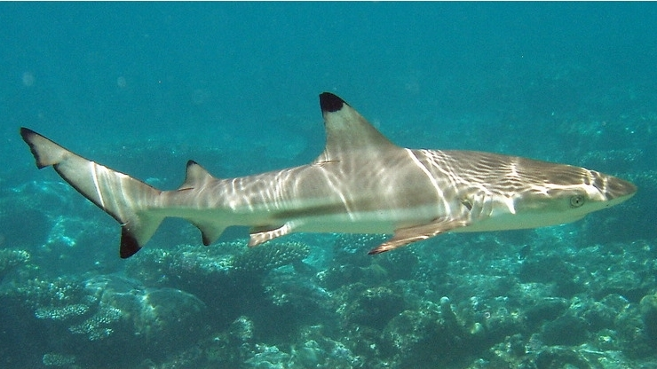

Predicting Evolution...
Evolution is often thought of as a haphazard, random process, the results of which cannot be predicted. A famous biological thought
experiment, dreamt up by Stephen Jay Gould, imagines re-winding the tape of evolutionary history on Earth, then replaying this “tape of life” from the
beginning. Given the random nature of evolution, it is often thought that the new life history of the planet would look very different from the current one,
in completely unpredictable ways. This stems from the idea that the various forms of life that are, or have been, present on Earth are just a small number of
lucky survivors from a wide range of possible lifeforms that could have fared equally well on the planet.
The life we see around us today may not be as lucky in the replay. Not everyone agrees with this interpretation, however, and recent work in the field of evolutionary biology is beginning to suggest that there
might be a hint of predictability to the process.There has always been a limited degree of predictability to evolution. The laws of physics can constrain the course of evolution in certain ways. The effective structure of an eye will be
limited by the laws of optics; optimum fin sizes and shapes for swimming underwater will be limited by mechanics. However, this only gives a small insight into
the potential appearances of certain types of life. Extra predictive power can be squeezed out of observed cases of convergent evolution (cases where the same
feature evolves independently, more than once). For example, by knowing that streamlined, fusiform bodies have evolved independently in many fast-swimming ocean
creatures on Earth, and knowing that physics suggests an optimum fin-to-body ratio, we can confidently predict the appearance of fast-swimming large ocean creatures
in an exoplanet ocean. However, the harder question to answer is: what would the chances of such a creature evolving in the first place actually be? Or, more generally:
what are the chances of animals appearing on a planet, given certain amounts of time and certain environmental conditions?

This might, one day, be something science can answer. Repetitive patterns seen in Earth's evolutionary history suggest that long-timespan
trends in a replay of the tape of life could be, to an extent, predictable. These patterns are observed from a variety of sources.
Lab-based evolution experiments (where identical populations are exposed to differing conditions and allowed to evolve independently)
show a level of repeatability, especially for populations that already contain some inter-population genetic variation. While this holds true for species that do well under
lab conditions and have fast reproduction times, it is not known if the rule holds for all species under “real world” conditions.
Genetics also provides some insight into evolutionary predictability. The study of the genes and mutations that are responsible for evolutionary changes
suggests that the paths taken by evolution differ from the possible paths not taken. Genetically, the favoured path involves no (or few) steps that decrease an organism's fitness (broadly
speaking, fitness is a measure of its ability to survive and reproduce). Few steps are taken that change fitness in a neutral way. Most are steps that increase fitness. Evolutionary
mutations that tend to be the most successful are those that have the fewest side-effects on other genes, compared to random mutations in general. These studies are still in their early stages
and more data are needed, but they are already beginning to increase our predictive abilities.
The tentative conclusion is then that, of all the possible paths evolution could take, only a subset of these would actually “work”. The natural world we
see around us is one member of that subset of workable solutions. Initial conditions constrain the evolutionary paths chosen and affect the probabilities of future outcomes. Predicting
the outcome over small timespans may be practically impossible, and accounting for random events, such as dinosaur-killing asteroid strikes, would be challenging. However, when thinking about
the long-term trends of evolution, new experimental and observational data may one day allow us to predict what a replay of the tape of life, on Earth or another habitable world,
might be like; albeit a fuzzy, faded version of the recording, with a lot of gaps and noise.
Further reading:
Orgogozo V. (2015) Replaying the tape of life in the twenty-first century. Interface Focus 5: 20150057
George McGee (2011) Convergent Evolution: Limited Forms Most Beautiful